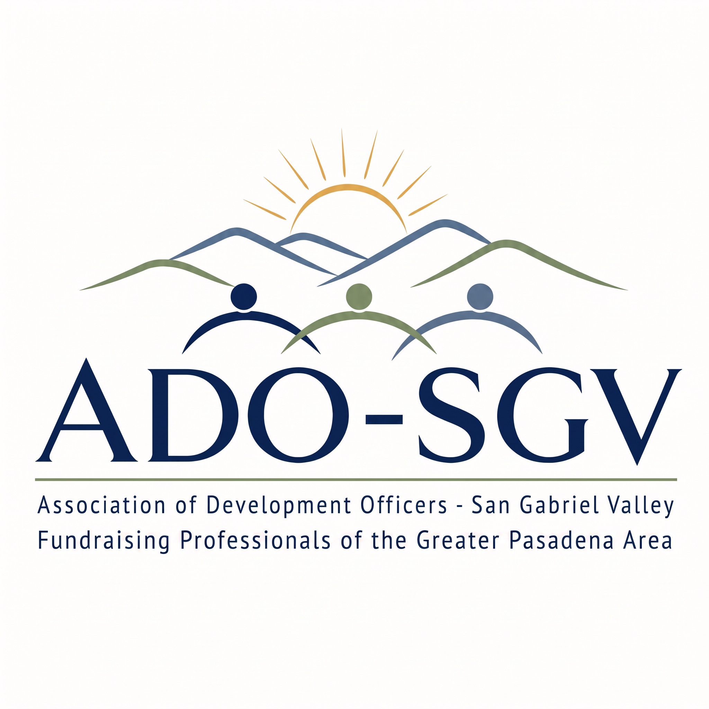

A peer group of nonprofit development professionals across the San Gabriel Valley. Real fundraising conversation, shared experience, and good company.
ADO/SGV brings together development directors, officers, and nonprofit fundraising staff from organizations across the San Gabriel Valley. No dues, no formality for its own sake: a standing table where the people who do this work trade what actually works, workshop what is hard, and know each other before they need each other.
The breadth of experience in the group is the point. Members span human services, health, education, youth development, and more, from one-person shops to established departments.
We meet on the third Wednesday of every other month at 3:00 PM, rotating between video calls and in-person gatherings hosted around the San Gabriel Valley.
Anyone doing nonprofit development work in or around the San Gabriel Valley: directors, officers, grant writers, ED-fundraiser hybrids, and the people about to become them.
Nothing. Show up, share what you know, ask what you need. The member roster is coming to this page soon.